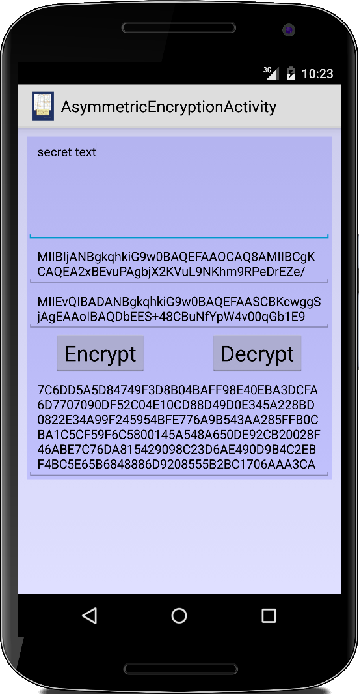

Special Topic: Cryptography
Die Ursprünge der Cryptography liegen schon bei den alten Griechen [1] und sogar davor: wie sende ich eine Nachricht an jemanden, ohne dass andere diese Nachricht lesen können. Schon im ersten Semester haben wir die Caesar Cipher [2] kennen gelernt, die Julius Caesar verwendet haben soll, um mit seinen Generälen zu kommunizieren. Zur Cryptography gehört aber noch mehr als nur Verschlüsselung.
Die Grundlagen dafür haben wir im zweiten Semester gelegt: Ganz wichtig sind gute Zufallszahlen, genauer Pseudo-Zufallszahlen. Praktisch alle modernen Verschlüsselungsverfahren beruhen auf Pseudo-Zufallszahlengeneratoren. Außerdem haben wir das Konzept der Hashfunktion kennengelernt als wir mit der HashMap und dem HashSet zu tun hatten. Auch in der Cryptography gibt es Hashfunktion, sogenannte Crypto-Hashverfahren. Und auch die Idee der Prüfsumme (Checksum), wie wir sie beim Luhn-Algorithmus für Creditkarten, der ISBN oder IBAN Nummern kennen gelernt haben, werden wir wieder benötigen. Deswegen haben wir eigentlich alle Grundlagen um uns jetzt ein bisschen mit modernen Verfahren der Cryptography zu beschäftigen.
An dieser Stelle vielleicht noch ein kleines Wort der Vorsicht: mit Java ist die Verwendung von kryptografischen Algorithemen sehr einfach geworden. Und auch dieses zugegebener Maßen sehr oberflächliche Kapitel gibt vielleicht den Eindruck, dass das Ganze gar nicht so kompliziert ist. Das ist aber ein falscher Eindruck, denn der Teufel liegt wirklich im Detail und in der richtigen Verwendung des richtigen Algorithmus für die jeweilige Anwendung. Wer Cryptography ernsthaft anwenden will, kommt nicht drum herum sich mit der Materie tiefer auseinanderzusetzen. Einen sehr schönen Einstieg liefert die Veranstaltung "Online Cryptography" von Dan Boneh [3].
.
Base64
Wenn wir mit kryptografischen Algorithmen arbeiten, werden wir es sehr häufig mit binären Daten, vor allem Bytearrays zu tun haben. Um diese binären Daten menschenlesbar zu machen, haben sich zwei Verfahren etabliert: einmal einfach die hexadezimale Schreibweise und zum anderen die Darstellung als Base64.
Hex
In der hexadezimale Schreibweise teilt man die 8-bit eines Bytes einfach in die oberen und die unteren vier Bit. Da man mit vier Bit Zahlen zwischen 0 und 15 darstellen kann, werden diese einfach auf die Ziffern 0-9 and die ersten sechs Buchstaben des Alphabets A-F abgebildet:
char[] HEX_VALUES =
{ '0', '1', '2', '3', '4', '5', '6', '7', '8', '9', 'A', 'B', 'C', 'D', 'E', 'F' };
Wenn wir jetzt ein Byte haben nehmen wir uns erst einmal die unteren vier Bit vor, die wir erhalten indem wir eine bitweise AND Operation auf unser Byte ausführen:
byte tmp = 153;
byte lowerFourBits = tmp & 0x0F;
char hex1 = HEX_VALUES[ lowerFourBits ];
Dann kommen die oberen vier Bit dran: dazu verwenden wir den unsigned right shift operator ">>>", der einfach eine Null links einfügt und alle übrigen Bits um eins nach rechts verschiebt. Das unterste Bit geht dabei verloren. Wenn wir das vier mal machen, dann haben wir die oberen vier Bits an der Stelle der ehemaligen unteren vier Bits, und links stehen vier Nullen. Der Rest geht dann wie oben:
byte tmp = 153;
byte higherFourBits = tmp >>> 4;
char hex2 = HEX_VALUES[ higherFourBits ];
Das Ganze können wir dann in einer kompakten Methode zusammenfassen, die wir häufiger verwenden werden und die uns aus einem Byte-Array einen Hex-String macht:
public static String byteArrayToHexString(byte[] buffer) {
char[] hex = new char[buffer.length * 2];
int tmp;
for (int j = 0; j < buffer.length; j++) {
tmp = buffer[j] & 0xFF;
hex[j * 2] = HEX_VALUES[tmp >>> 4];
hex[j * 2 + 1] = HEX_VALUES[tmp & 0x0F];
}
return new String(hex);
}
Dazu gibt es auch die umgekehrte Methode, hexStringToByteArray(hexString), die aus einem Hex-String wieder ein Byte-Array macht.
Base64
Die Darstellung von Binärdaten als Hex-String ist nicht besonders effektiv und verschwendet eigentlich viel Platz. Wir haben ja noch die ganzen anderen Buchstaben, die kleinen und die großen, und auch noch einige Sonderzeichen. Deswegen hat sich das Base64 Verfahren etabliert [4], das relativ effektiv mit Platz umgeht und trotzdem lesbar bleibt. Die Details müssen wir nicht verstehen, lediglich wie man es verwendet:
byte[] ba = new byte[8]; String base64 = Base64.encodeToString(ba, Base64.DEFAULT); String base64 = "CB1bmQgUXVhcms="; byte[] ba = Base64.decode(base64, Base64.DEFAULT);
Vielleicht sollten man noch andeuten, dass es sich bei Base64 um eine Kodierung handelt, nicht um eine Verschlüsselung.
.
Hash
In Java hat jede Klasse eine hashCode() Methode. Z.B. für die Klasse String sieht diese grob so aus:
public int hashCode(char[] value) {
int h = 0;
for (int i = 0; i < value.length; i++) {
h = 31 * h + value[i];
}
return h;
}
Es wird also aus einem beliebig großen String eine 32-Bit Zahl gemacht. Verwendet wird die Methode in den Klassen HashMap und HashSet damit diese möglichst effektiv Daten lesen und schreiben können.
Was sind denn die Anforderung an so eine Hash-Funktion? Zum Einen soll sie möglichst schnell sein, und zum Andern soll es möglichst selten zu Kollisionen kommen, also dass für zwei unterschiedliche Strings der gleiche Hashwert raus kommt. Speziell die zweite Anforderung ist für Crypthashfunktionen ganz wichtig.
.
.
.
Checksum
Kommen wir zu den Prüfsummen. Bei Prüfsummen geht es eigentlich weniger darum, dass sie super-schnell sind, sondern eher darum, dass sie Fehler finden. Z.B. beim Luhn-Algorithmus für Kreditkarten, den wir im zweiten Semester kennen gelernt haben, geht es darum Tippfehler und Zahlendreher aufzudecken. Ähnliches tun auch die Algorithmen für die ISBN und IBAN Nummern.
Diese Algorithmen funktionieren ganz gut für Werte fester Länge, wie z.B. Kreditkartennummern u.ä., die ja immer 16 Zahlen lang sind. Wenn wir es aber mit Bytearrays von unterschiedlicher Länge oder sogar mit Datenströmen zu tun haben, dann wird sehr häufig die CRC-32 oder auch die Adler-32 Checksum verwendet [5,6]. Z.B. sowohl im IP-Protokoll, als auch im TCP-Protokoll wird die CRC Prüfsumme verwendet um Fehler in der Datenübertragung festzustellen [7].
Beide Algorithmen sind im java.util.zip Paket von Java implementiert und ganz einfach zu verwenden:
byte bytes[] = "Hello world".getBytes();
Checksum checksum = new CRC32();
checksum.update(bytes, 0, bytes.length);
System.out.println("Check sum is: " + checksum.getValue());
Sie sind sehr schnell und entdecken einfache Fehler.
.
.
CryptoHash
Bei kryptografischen Hashfunktionen [8] handelt es sich um spezielle Prüfsummen, die zu den normalen Eigenschaften einer Prüfsumme zusätzlich noch explizit folgende haben sollten:
- es muss praktisch unmöglich sein vom Hashwert auf den Wert der Ausgangsdaten zu schließen,
- kleine Änderungen in den Ausgangsdaten sollen zu großen Änderungen im Hashwert führen, und
- es soll quasi unmöglich sein, zwei Sätze von Ausgangsdaten zu finden, die zum gleichen Hashwert führen.
Keiner der Algorithmen die wir bisher gesehen haben hat diese Eigenschaften, aber kryptografischen Hashfunktionen haben sie.
Wofür verwendet man kryptografischen Hashfunktionen aber nun? Die drei wichtigsten sind:
- zum Speichern von Passwörtern in Datenbanken,
- um festzustellen ob Daten verändert wurden, oder
- zum Identifizieren von Dateien oder Daten.
Neuerdings mit Cryptowährungen kommt auch noch die Idee "proof-of-work" hinzu, dazu später mehr.
In der Verwendung sind die kryptografischen Hashfunktionen ganz einfach. Man holt sich erst den Algorithmus seiner Wahl, z.B. den MD5, führt ihm dann mittels update() die Daten zu, und verdaut das Ganze am Ende mit der digest() Methode:
MessageDigest md = MessageDigest.getInstance("MD5");
md.update( byteArray );
byte[] hashCode = md.digest();
Der hashCode den man dann erhält ist je nach Algorithmus zwischen 128 Bit (MD5) und 512 Bit (SHA-512) lang. Die vier wichtigsten Cryptohash Algorithmen sind:
- MD5
- SHA-1
- SHA-2 in den Versionen SHA-256 und SHA-512 [9]
- bcrypt [10]
Die ersten beiden sollte man aber heutzutage nicht mehr verwenden, da sie nicht mehr als sicher gelten.
Rainbow Tables
Betrachten wir das Speichern von Passwörtern in Datenbanken etwas näher: Die Passwörter dort im Klartext zu speichern ist ziemlicher Unsinn, denn sollte mal jemand in unsere Datenbank hacken, dann hat er alle Passwörter. Passiert überraschend häufig [11]. Deswegen speichert man den Cryptohashwert des Passwortes in der Datenbank. Nehmen wir an unser Passwort ist das übliche, also "123456", dann ist dessen MD5 Wert der Hex-String:
E10ADC3949BA59ABBE56E057F20F883E
Wegen der oben genannten Eigenschaften der Cryptohashfunktionen kann man das Passwort nur durch Brute-Force wieder herausfinden, soll heißen, man muss alle möglichen String-Kombination ausprobieren. Nun würde man denken das macht doch keiner. Aber dem ist nicht so: angefangen damit hat die NSA, und inzwischen gibts diese sogenannten Rainbow Tables im Internet zum runterladen.
Wie können wir der NSA und anderen Hackern aber die Suppe versalzen? Richtig, mit Salz:
MessageDigest md = MessageDigest.getInstance("MD5");
md.update( byteArray );
byte[] salt = new byte[64];
new SecureRandom().nextBytes(salt);
md.update(salt);
byte[] hashCode = md.digest();
Wir müssen uns natürlich unser Salz merken und an einer sicheren Stelle aufbewahren, was nicht ganz trivial ist. Aber damit sind unsere Passwörter dann auch vor Brute-Force Attacken sicher.
.
CaesarCipher
Das erste Verschlüsselungsverfahren stammt von den alten Griechen [1] und wird heute häufig als Caesar Cipher bezeichnet [2]. Eigentlich ist es nichts anderes als Addition kombiniert mit unserem alter Freund dem Restwertoperator, angewendet auf Buchstaben. Wir haben eine einfache Version bereits im ersten Semester geschrieben, jetzt machen wir daraus eine App.
Man wählt als erstes einen Schlüssel, das ist eine Zahl zwischen 1 und 25:
int key = 12;
Zur Verschlüsselung addiert man den Schlüssel dann zu dem Buchstaben den man verschlüsseln möchte und wendet danach den Restwertoperator darauf an:
private char encryptChar(char c, int key) {
int d = c - 'a';
int e = d + key; // encryption happens here
int f = e % 26;
char g = (char) (f + 'a');
return g;
}
Das macht man dann für alle Buchstaben (die am besten alle klein geschrieben sind). Für die Entschlüsselung dreht man das Ganze einfach um, man subtrahiert also den Schlüssel.
Damit man also Nachrichten verschlüsseln und enschlüsseln kann, benötigt man den Schlüssel. Hier bei Caesar ist das eine Zahl zwischen 1 und 25. Das ändert sich auch bei den modernen Verfahren nicht, die Zahl wird nur größer. Jeder der den Schlüssel hat, kann die Nachrichten entschlüsseln [12]. Deswegen ist das Problem aller Verschlüsselungsverfahren, wie tauscht man den Schlüssel so aus, dass niemand anderes ihn zu sehen bekommt. Das Problem wurde erst 1976 von Diffie und Hellman gelöst.
Eine Anmerkung noch, die Caesar Cipher ist natürlich nicht besonders sicher, und lässt sich heute ganz einfach mit statistischen Verfahren knacken.
.
XORCipher
Kommen wir zur Mutter aller modernen Verschlüsselungsverfahren, der XOR Cipher. Auch die haben wir schon im ersten Semester kennen gelernt, damals haben wir die Mona Lisa mit dem Taj verheiratet (Steganographie). Zur Erinnerung, die Wahrheitstabellen für die drei logischen Operationen AND, OR und XOR, sehen wie folgt aus:

Das sieht jetzt erst mal recht langweilig aus und scheint mit Verschlüsselung nicht besonders viel zu tun zu haben. Allerdings hat die XOR Operation eine sehr interessante Eigenschaft: Nehmen wir den Buchstaben 'a', dessen ASCII Wert is 97. Dann nehmen wir irgendeine Zufallszahl, z.B. 42, und die beiden verknüpfen wir mit der XOR Operation:
0110 0001 (97) ^ 0010 1010 (42) ----------- = 0100 1011 (75)
Wenn wir jetzt dieses Resultat, die 75, mit der 42 noch mal per XOR verknüpfen,
0100 1011 (75) ^ 0010 1010 (42) ----------- = 0110 0001 (97)
dann kommt da wieder unser 'a' raus! Wenn wir das mit dem vergleichen was wir gerade in der Caesar Cipher gesehen haben, dann sieht das verdammt nach Verschlüsselung aus: das erste Mal haben wir verschlüsselt, das zweite Mal entschlüsselt, und der Schlüssel ist die 42.
One-Time Pad
Wie gut unser XOR-Verschlüsselung ist, hängt total von der Länge und der Zufälligkeit des Schlüssels ab. Ist der Schlüssel 8 Bit lang, wie gerade, dann ist die XOR Cipher keinen Deut besser als die Caesar Cipher. Ist die Länge des Schlüssels aber genauso lang wie die Nachricht, und ist der Schlüssel vollkommen zufällig, dann nennt man diese Art der Verschlüsselung die One-Time Pad Verschlüsselung (Einmalverschlüsselung) [13]. Diese ist absolut sicher, d.h. kann nicht geknackt werden. Das Problem ist allerdings der Schlüssel, der ist nämlich ziemlich groß (mindestens genauso groß wie die Nachricht), und muss irgendwann vorher mal zwischen Sender und Empfänger ausgetauscht worden sein.
Lehmer
Aber mit Zufallszahlen kennen wir uns aus (wenigstens wenn wir im zweiten Semester aufgepasst haben): da gab es nämlich den Herrn Lehmer mit seinen Pseudozufallszahlen. Die einfache Idee: man verwendet anstelle des One-Time Pads Pseudozufallszahlen. Wie stellt man aber sicher, dass Sender und Empfänger die gleichen Pseudozufallszahlen verwenden? Wenn wir uns erinnern, sind die Pseudozufallszahlen in Lehmer's Algorithmus (und allen andern Pseudozufallszahlenalgorithmen) eindeutig durch die sogenannte Seed festgelegt. D.h., wir müssen dem Empfänger lediglich unsere Seed mitteilen, damit er die Nachricht entschlüsseln kann. Also ist die Seed eigentlich der Schlüssel in diesem Fall.
Eigentlich ist Cryptography nichts anderes als Potenzieren, mit dem Restwertoperator richtig hantieren und ein bisschen XOR.
Mona Lisa
Als kleine Anwendung für die XOR Cipher wollen wir die Mona Lisa verschlüsseln. Der Code ist eigentlich identisch mit dem aus dem ersten Semester: lediglich das zweite Bild das wir als Schlüssel verwenden ist jetzt nicht das Taj, sondern ein Bild voller Zufallszahlen:
private GImage createRandomImage(int width, int height, int seed) {
rgen.setSeed(seed);
int[][] array = new int[width][height];
for (int i = 0; i < height; i++) {
for (int j = 0; j < width; j++) {
array[i][j] = rgen.nextInt();
}
}
return new GImage(array);
}
Wir müssen natürlich das gleiche Zufallsbild für Ver- und Entschlüsselung nehmen. Sonst wird das nix.
.
SymmetricEncryption
Kommen wir zu den heute gängigen symmetrischen Verschlüsselungsverfahren. Sie heißen symmetrisch, weil für die Verschlüsselung der gleiche Schlüssel verwendet wird wie für die Entschlüsselung. Praktisch alle symmetrischen Verschlüsselungsverfahren sind irgendwo Abwandlungen der XOR-Cipher. Es wird in der Regel ein etwas besserer Zufallszahlengenerator verwendet, die Schlüssel (Seeds) sind meist etwas länger, und vor allem beim Padding ist man vorsichtiger [14].
Bekannte symmetrische Verfahren sind
- AES
- IDEA
- Blowfish
- Skipjack
- DES
- TripleDES
Dabei wurden DES und TripleDES von der NSA entwickelt, und man kann sich vorstellen wie sicher die sind. Am häufigsten sieht man heutzutage den AES Algorithmus mit einer Schlüssellänge von 256 Bit. Aber auch der IDEA wird öfter verwendet. Blowfish ist auch nicht schlecht. Welche Algorithmen zur Verfügung stehen hängt stark von der Android Version und teilweise auch vom Hersteller ab und dem Land in dem man lebt.
Nachdem wir den Algorithmus ausgewählt haben, müssen wir noch ein Padding wählen. Was ist Padding? Bei all den Algorithmen oben handelt es sich um sogenannt Block-Ciphers. D.h. es wird immer ein Block mit x-Bytes verschlüsselt, wobei x meist die Länge des Schlüssels ist. Was ist aber, wenn unsere Nachricht nicht genau x-Byte lang ist, sondern etwas länger oder kürzer? Dann wir der Rest aufgefüllt (padded). Und dieses Auffüllen ist sehr problematisch. Füllt man z.B. mit lauter Nullen auf, dann ist das nicht sehr schlau, denn ein möglicher Attacker kann dann in den verschlüsselten Daten Regelmässigkeiten entdecken und daraus auf den Schlüssel schließen. Deswegen ist das Padding ganz wichtig, und man muss es richtig machen. Wer Details dazu wissen möchte, sollte sich die Vorlesung von Dan Boneh [16] oder Jonathan Katz [17] ansehen.
Beim Padding wählt man erst Mal den Modus Operandi (mode of operation), da gibt es ECB, CBC, CFB und OFB. ECB sollte man nicht mehr verwenden, CFB und OFB sind eher für Stream-Ciphers [15]. Danach wählt man noch die Länge des Padding, und da gibt es vor allem PKCS5Padding und PKCS7Padding. Auch hier sollte man ersteren nicht verwenden, wenn möglich.
Sehen wir uns das Ganze mal in der Praxis an: als erstes legen wir unseren Algorithmus und das Padding fest, z.B.:
private final String ALGORITHM = "AES"; private final String PADDING = "AES/ECB/PKCS7Padding";
wir haben hier ECB gewählt, weil wir nett zur NSA sein wollen. Sonst wär's ja unfair.
Dann benötigen wir einen Schlüssel, den wir mit der KeyGenerator Klasse erzeugen:
KeyGenerator kgen = KeyGenerator.getInstance(ALGORITHM);
kgen.init(256); // use a 256 bit length
SecretKey secretKey = kgen.generateKey();
Diesen Schlüssel verwenden wir sowohl für die Verschlüsselung als auch für die Entschlüsselung (symmetrisch), wir müssen ihn uns merken, und irgendwie unbemerkt zum Empfänger bringen. Da der Schlüssel eigentlich binär íst (ein Bytearray) macht man diese meist mittels HEX oder Base64 menschenlesbar, z.B.:
String base64 = Base64.encodeToString(secretKey.getEncoded(), Base64.DEFAULT);
Das Verschlüsseln geht dann wie folgt:
String msg = "Hello World!"; Cipher cipher = Cipher.getInstance(PADDING); cipher.init(Cipher.ENCRYPT_MODE, secretKey); byte[] encrypted = cipher.doFinal(msg.getBytes("UTF-8"));
Wir holen uns eine Cipher mit dem richtigen Padding. Danach initialisieren wir die Cipher mit dem Schlüssel, und sagen ihr noch, dass sie verschlüsseln soll. Das Verschlüsseln selbst passiert dann in der doFinal() Methode. Der verschlüsselte Text wird in dem Bytearray encrypted gespeichert.
Der Empfänger erhält das Bytearray encrypted mit dem verschlüsselten Text. Den Schlüssel hat er früher auf einem anderen Weg irgendwie erhalten. Die Entschlüsselung verläuft nun vollkommen analog (obwohl es digital ist ;-):
Cipher cipher = Cipher.getInstance(PADDING);
cipher.init(Cipher.DECRYPT_MODE, secretKey);
byte[] decrypted = cipher.doFinal(encrypted);
String msg = new String(decrypted, "UTF-8");
Und mehr ist da nicht.
Symmetrische Verschlüsselungsverfahren sind sehr sicher und auch sehr schnell. Sie haben aber alle ein gemeinsames Problem: den Schlüsselaustausch. Wie können zwei Parteien, die sich vorher noch nie gesehen haben einen Schlüssel austauschen?
.
PassPhraseEncryption
Bevor wir das Schlüsselaustauschproblem lösen, kommen wir erst noch zu einem anderen Problem: So ein 256 Bit AES Schlüssel sieht wenn man ihn Base64 encoded so aus:
5iWRLweSee65JYRd6dnAkJsezKpg9kwyITRGeINfzPE=
Das kann sich doch keiner merken. Deswegen gibt es die PassPhrase-Verschlüsselung: man verwendet also ein Passwort oder besser einen ganzen Satz zur Verschlüsselung. Denn je länger das Passwort, desto sicherer die Verschlüsselung.
Als erstes müssen wir einen Algorithmus auswählen,
private final String ALGORITHM = "PBEWithMD5AndDES";
Auf Android Geräten ist die Auswahl an PBE Algorithmen nicht besonders groß, ausser dem zweiten, hört sich keiner von denen besonders sicher an (und ausgerechnet der zweite funktioniert auf meinem Handy nicht):
- PBEWithMD5AndDES
- PBKDF2WithHmacSHA1
- PBEWithMD5AndDES
- PBEWithMD5AndTripleDES
Falls man hier nach etwas sichererem sucht, dann sollte man sich mal Bouncy Castle ansehen [18].
Zur Verschlüsselung benötigen wir den Passphrase. Aus dem erzeugen wir mittels der SecretKeyFactory einen Schlüssel:
String passPhrase = "@ v3ry l0n9 (0mp1!(a+3d pa$$phra$3, w!+h num83r$ and $p3(!a1 (har$"; KeySpec keySpec = new PBEKeySpec(passPhrase.toCharArray(), salt, 1024, 256); SecretKeyFactory keyFactory = SecretKeyFactory.getInstance(ALGORITHM); SecretKey secretKey = keyFactory.generateSecret(keySpec); AlgorithmParameterSpec algSpec = new PBEParameterSpec(salt, nrOfIterations); Cipher cipher = Cipher.getInstance(ALGORITHM); cipher.init(Cipher.ENCRYPT_MODE, secretKey, algSpec); byte[] encrypted = cipher.doFinal(msg.getBytes());
Neu hier ist das Salz, das wir bereits bei den Rainbow-Tables gesehen haben: es versalzt der NSA die Suppe:
salt = new byte[64]; new SecureRandom().nextBytes(salt);
Zusätzlich haben wir den Parameter nrOfIterations, den wir z.B. auf 19 setzen:
int nrOfIterations = 19;
Er besagt wie oft das Salz in die Suppe gestreut wird. Je häufiger desto salziger die Suppe, desto länger dauert es aber auch bis die Suppe fertig ist.
Zum Entschlüsseln benötigen wir wieder den Passphrase, aber auch das Salz und die nrOfIterations:
String passPhrase = "@ v3ry l0n9 (0mp1!(a+3d pa$$phra$3, w!+h num83r$ and $p3(!a1 (har$"; KeySpec keySpec = new PBEKeySpec(passPhrase.toCharArray(), salt, 1024, 256); SecretKeyFactory keyFactory = SecretKeyFactory.getInstance(ALGORITHM); SecretKey secretKey = keyFactory.generateSecret(keySpec); AlgorithmParameterSpec algSpec = new PBEParameterSpec(salt, nrOfIterations); Cipher cipher = Cipher.getInstance(ALGORITHM); cipher.init(Cipher.DECRYPT_MODE, secretKey, algSpec); byte[] decrypted = cipher.doFinal(encrypted); String msg = new String(decrypted, "UTF-8");
Man liest nun häufig im Internet, dass man Salz und die Anzahl der Iterationen bedenkenlos mit der verschlüsselten Nachricht übermitteln kann. Mir persönlich scheint das aber sehr komisch. Würd ich nicht machen.
Allgemein muss man sagen, PassPhrase Verschlüsselung ist zwar praktisch von der Handhabbarkeit und Nutzerfreundlichkeit, aber es ist bei weitem nicht so sicher wie die normale, symmetrische Verschlüsselung die wir oben gesehen haben.
Eine Frage: haben Sie einen Passwortmanager auf Ihrem Handy? Haben Sie mal darauf geachtet von welcher Firma dieser hergestellt wurde? Haben Sie gecheckt ob diese Firma vielleicht eine Verbindung zur NSA hat? Sinn würde das schon machen, oder? Aber jetzt haben wir ja unseren eigenen.
.
Diffie - Hellman
Wir haben es schon mehrmals angesprochen: Das Problem des Schlüsselaustausches. Es wurde 1976 von Diffie und Hellman gelöst [19]. Der Algorithmus ist etwas nicht trivial, aber im Grunde wissen wir schon genug, um ihn zu verstehen.
Prime
Wir müssen uns erst einmal an die Primzahlen aus der Schule erinnern: Primzahlen [20] sind Zahlen, die nur durch die Eins und durch sich selbst geteilt werden können. Die ersten paar Primzahlen sind:
2, 3, 5, 7, 11, 13, 17, 19, 23, 29, 31, 37, 41, 43, 47, 53, 59, 61, 67, 71, 73, 79, 83, 89, 97, ...
Co-Prime
Zu Beginn des zweiten Semesters lernten wir den Euklid-Algorithmus kennen, um den größten gemeinsamen Teiler (gcd) zwischen zwei Zahlen zu finden. Für die Mathematiker ist eine Zahl 'a' teilerfremd (coprime) mit einer Zahl 'n', wenn gilt [21]
gcd(a, n) = 1
Das bedeutet eigentlich 'a' und 'n' haben keinen größten gemeinsamen Teiler. Das ist es, was teilerfremd bedeutet. Betrachten wir zwei Beispiele: teilerfremd von n = 5 sind:
1, 2, 3, und 4
oder teilerfremd von n = 8 sind:
1, 3, 5, und 7.
Congruent
Als nächstes müssen wir lernen, was kongruent für einen Mathematiker bedeutet [22]: Zwei Zahlen 'a' und 'b' gelten als kongruent modulo 'n', wenn
a = b % n
wobei '%' unser geliebter Modulo-Operator ist. Als Beispiel kann man an die Uhr denken: wir sagen z.B., dass 3:00 Uhr nachmittags gleichbedeutend mit 15:00 Uhr ist, denn
3 = 15 % 12
d.h. die Zahlen 3 und 15 sind kongruent modulo 12. Ist doch gar nicht so schwer. Mathematiker verwenden nur lustige Worte für einfache Konzepte.
Primitive Root Modulo n
Nun wirds aber noch lustiger: wir sagen, dass eine Zahl 'g' eine Primitivwurzel modulo 'n' ist,
- wenn jede Zahl 'a' die teilerfremd von 'n' ist,
- auch noch kongruent zu 'g' hoch 'k' modulo 'n' ist.
Zur Veranschaulichung wählen wir n = 5. Zuerst müssen wir also alle Zahlen 'a' finden, die zu 5 teilerfremd sind. Das haben wir oben schon gemacht:
1, 2, 3, und 4.
Zweitens, müssen wir folgendes überprüfen: für jede von diesen Zahlen 'a' müssen wir jetzt ein 'g' finden, das zu irgendeiner willkürlichen Potenz 'k' genommen und davon modulo 'n', wieder eines dieser 'a' ergibt. Nur wenn da wieder alle 'a' vorkommen (also keins verloren gegangen ist), dann ist 'g' eine Primitivwurzel modulo 'n'. Versuchen wir es also mit der Zahl g = 2 und n = 5:
2 ^ 1 % 5 = 2 2 ^ 2 % 5 = 4 2 ^ 3 % 5 = 3 2 ^ 4 % 5 = 1
Also 2 ist auf jeden Fall eine Primitivwurzel modulo 5. Mal sehen, ob g = 4 eine ist:
4 ^ 1 % 5 = 4 4 ^ 2 % 5 = 1 4 ^ 3 % 5 = 4 4 ^ 4 % 5 = 1
Wir sehen also, dass 4 keine Primitivwurzel modulo 5 ist. In der Wikipedia [23] finden wir die Liste der Primitivwurzel für die ersten hundert n:
... n = 17: 3, 5, 6, 7, 10, 11, 12, 14 n = 19: 2, 3, 10, 13, 14, 15 n = 23: 5, 7, 10, 11, 14, 15, 17, 19, 20, 21 ...
Aber wir könnten sie auch selbst berechnen. Jetzt sind wir alle bereit für Diffie-Hellman.
Diffie and Hellman
Der von Diffie und Hellman vorgeschlagene Algorithmus führt zu einem gemeinsamen Geheimnis, ohne dass das Geheimnis selbst ausgetauscht werden muss. Stattdessen kann man es berechnen. Dieses Geheimnis kann man dann als Schlüssel für die weitere, verschlüsselte Kommunikation verwenden.
Um zu sehen, wie der Algorithmus funktioniert, denken wir uns zwei Personen, Alice und Bob. Alice und Bob wollen geheime Nachrichten austauschen und benötigen dafür einen gemeinsamen geheimen Schlüssel.
-
Als erstes müssen sich Alice und Bob auf zwei Zahlen 'p' und 'g' einigen, mit der Einschränkung, dass 'p' eine Primzahl und 'g' eine Primitivwurzel modulo 'p' ist. Von dem, was wir gerade gelernt haben, könnten p = 17 und g = 7 gute Zahlen sein. Die Zahlen 'p' und 'g' sind öffentlich, d.h. jeder kann sie sehen.
-
Als nächstes wählen Alice und Bob jeweils eine geheime Zahl. Nehmen wir an, Alice wählt a = 3 und Bob wählt b = 5. Diese geheimen Zahlen behalten sie nur für sich und teilen sie mit niemandem.
-
Aus diesen geheimen Zahlen berechnen sie dann neue Zahlen 'A' und 'B', mit der folgenden Formel
A = g^a % p = 7^3 % 17 = 3 und B = g^b % p = 7^5 % 17 = 11
Diese beiden Zahlen teilen sie miteinander. Auch hier gilt, jeder kann diese beiden Zahlen sehen.
-
Nun können beide den gemeinsamen Schlüssel berechnen: Alice benutzt ihre geheime Zahl 'a' und Bobs öffentliche Zahl 'B', während Bob seine geheime Zahl 'b' und Alices öffentliche Zahl 'A' benutzt:
s = B^a % p = 11^3 % 17 = 5 und s = A^b % p = 3^5 % 17 = 5
Wir sehen, dass beide Geheimnisse 's' gleich sind. 's' ist der gemeinsame Schlüssel zwischen Alice und Bob. Für einen Lauscher ist es praktisch unmöglich, dieses Geheimnis aus den gegebenen öffentlichen Informationen zu berechnen.
Warum funktioniert das? Der Grund dafür ist, dass für die gegebene Konstruktion stets gilt:
(g^a % p)^b % p = (g^b % p)^a % p
aber nur, wenn 'p' eine Primzahl und 'g' eine Primitivwurzel modulo 'p' ist. Es gibt noch eine weitere Einschränkung: die Zahlen a, b und p sollten sehr große Zahlen sein, nur dann ist es sehr schwer, diesen Algorithmus mit roher Gewalt zu knacken.
.
AsymmetricEncryption
Ein Jahr nach Diffie und Hellman fanden die drei Forscher Ron Rivest, Adi Shamir and Leonard Adleman mit dem nach ihnen benannten RSA Algorithmus den ersten Algorithmus der asymmetrischen Art [24]. Asymmetrisch deshalb, weil es hier zwei Schlüssel gibt: einen zum Verschlüsseln, dem Public-Key und einen zum Entschlüsseln, dem Private-Key. Praktisch die gesamte Internetverschüsselung beruht auf diesen beiden Verfahren, Diffie-Hellman und RSA.
Ähnlich wie Diffie-Hellman beruht der RSA Algorithmus auf der Tatsache, dass es rechnerisch sehr aufwändig ist (d.h. lange dauert) das Produkt zweier großer Primzahlen zu faktorisieren. Die Details sind nicht super kompliziert, sogar einfacher als bei Diffie-Hellman, man muss halt draufkommen [25].
Wie verwendet man jetzt so einen asymmetrischen Verschlüsselungsalgorithmus? Erst einmal muss man wieder den Algorithmus und das Padding auswählen:
private final String ALGORITHM = "RSA"; // "ElGamal" private final String PADDING = "RSA/ECB/PKCS1Padding"; // "ElGamal"
Weder ECB noch PKCS1Padding sind jetzt das Gelbe vom Ei, aber wenn man nichts anderes hat, nimmt man was man kriegt. Ausser dem RSA Algorithmus gibt es noch den ElGamal Algorithmus. Soll auch nicht schlecht sein.
Als nächstes müssen wir Schlüssel erzeugen, in diesem Fall ein Paar:
KeyPairGenerator kpg = KeyPairGenerator.getInstance(ALGORITHM); kpg.initialize(2048, new SecureRandom()); KeyPair pair = kpg.generateKeyPair();
Das KeyPair besteht aus zwei Schlüsseln, dem public und dem private Key:
PublicKey publicKey = keyPair.getPublic(); PrivateKey privateKey = keyPair.getPrivate();
Der public Key, darf und soll öffentlich sein, also jeder kann ihn sehen. Wenn also Alice an Bob eine Nachricht schicken möchte, dann benötigt sie Bob's public Key. Damit verschlüsselt sie ihre Nachricht an Bob:
Cipher cipher = Cipher.getInstance(PADDING);
cipher.init(Cipher.ENCRYPT_MODE, publicKey);
byte[] encrypted = cipher.doFinal(msg.getBytes("UTF-8"));
Bob erhält die encrypted Nachricht von Alice, und entschlüsselt sie mit seinem private Key:
Cipher cipher = Cipher.getInstance(PADDING);
cipher.init(Cipher.DECRYPT_MODE, privateKey);
byte[] decrypted = cipher.doFinal(encrypted);
String msg = new String(decrypted, "UTF-8");
Den private Key darf niemand ausser Bob sehen. Denn nur mit ihm kann man Nachrichten entschlüsseln.
Also, mit dem public Key kann man nur Verschlüsseln und mit dem private Key nur Entschlüsseln. Wie schickt jetzt aber Bob Nachrichten an Alice? Dafür muss Alice ihr eigenes Schlüsselpaar erzeugen, und davon ihren public Key an Bob schicken. D.h. bevor wir an jemanden verschlüsselte Nachrichten schicken können müssen wir den public Key der Person haben mit der wir kommunizieren wollen. Im Internet gibt es dafür spezielle Server [26], wobei die Frage ist in wieweit man denen wirklich trauen kann. Denn wenn ich die NSA wäre, würde ich so einen Keyserver hosten...
.
DigitalSignature
Ein interessantes Nebenrprodukt der asymmetrischen Verschlüsselung ist die digitale Signatur [27]. Mit einer digitalen Signatur kann man drei Dinge erreichen:
- Authentication: man kann nachweisen wer eine Nachricht gesendet hat,
- Non-Repudiation: der Autor kann nicht leugnen Urheber der Nachricht zu sein und
- Integrity: die Nachricht wurde nicht verändert.
Die Integrität einer Nachricht kann man auch mit einer Cryptohashfunktion (wie SHA-256) nachweisen, die ersteren beiden aber nicht. Das geht nur mit der digitale Signatur.
Es gibt zwei Algorithmen mit denen man digitale Signaturen erstellen kann, DSA [28] und RSA. Wir beginnen wie üblich mit der Auswahl von Algorithmus und Padding:
private final String ALGORITHM = "DSA"; private final String PADDING = "SHA1withDSA";
Als nächstes benötigen wir wieder ein KeyPair:
KeyPairGenerator kpg = KeyPairGenerator.getInstance(ALGORITHM); kpg.initialize(1024, new SecureRandom()); KeyPair pair = kpg.generateKeyPair();
Auch hier gilt wieder: der public Key ist öffentlich, also für jeden einsehbar, der private Key sollte nie in fremde Hände gelangen.
Anstelle zu Verschlüsseln, signieren wir die Daten um die es geht, allerdings mit unserem private Key:
Signature dsaSign = Signature.getInstance(PADDING); dsaSign.initSign(privateKey); dsaSign.update(msg.getBytes()); byte[] signature = dsaSign.sign();
Die Signatur hat ähnlich wie ein Cryptohash eine feste Länge, und auch ansonsten hat sie die gleichen Eigenschaften, die wir auch schon bei den Cryptohashes geschätzt haben.
Wie verifiziert man nun eine Signatur? Zunächst braucht man die Originaldaten, also die msg. Ausserdem benötigt man den public Key. Der ist ja öffentlich zugänglich, also kann jeder die Signatur verifizieren:
Signature dsaSign = Signature.getInstance(PADDING); dsaSign.initVerify(publicKey); dsaSign.update(msg.getBytes()); boolean verifies = dsaSign.verify(signature);
Wenn da true rauskommt, dann passt alles. Kommt aber false raus, hat entweder jemand anderes die Daten erzeugt oder die Daten sind verändert worden. D.h. also beim digitalen Signaturverfahren werden die Daten nicht verschlüsselt. Die Daten sind für jeden einsehbar. Alles was wir mit der Signatur sagen ist, dass wir die Daten fabriziert haben, und dass die Daten von niemandem verändert wurden.
.
HashCash
Wir alle werden ständig mit Spam-Mails bombardiert. Wie könnte man solche E-Mails verhindern? Wenn sie etwas kosten würden. Das würde das Problem lösen, denn für die Spammer wäre es einfach zu teuer. Aber niemand will wirklich für das Versenden von E-Mails bezahlen. Aber was, wenn es ein bisschen Rechenpower braucht? Für den normalen Benutzer wäre es kein Problem zehn Sekunden zu warten, um eine E-Mail zu senden. Aber für Spammer wäre das ein Problem. Denn wenn man eine Millionen E-Mails versenden will, würde das 115 Jahre dauern.
Was hat das mit Kryptographie zu tun? Die erste Beobachtung, die wir machen müssen, ist, dass wenn wir die Zeit messen, wie lange es dauert, den Kryptohash (z.B. SHA-256) eines gegebenen Textes, zum Beispiel einer E-Mail, zu berechnen, dann geht das nicht sofort, sondern dauert ein paar hundert Millisekunden. Die zweite Beobachtung ist, dass, wenn wir ein Byte zu unserer Nachricht hinzufügen, dies den Wert des resultierenden Hash verändert.
Die Idee hinter HashCash ist nun dieses Byte so lange zu modifizieren, bis die erste Stelle des resultierenden Hashwerts eine Null ist. Wir können auch verlangen, dass die ersten beiden Ziffern Null sein sollen. Die Berechnung wird dann noch länger dauern. Je mehr Nullen wir wollen, desto länger dauert es. Das ist auch bekannt unter dem Begriff "Proof-of-Work" [30]. Auf aktueller Hardware dauert es etwa zehn Sekunden, einen Hash zu finden, der mit fünf Nullen beginnt, und genau das macht Hashcash [29]. Diese Idee des Proof-of-Work ist auch für Kryptocoins wie Bitcoin relevant [31].
.
SSL, HTTPS: Mixed Encryption
Zum Schluss sie noch angemerkt, dass asymmetrische Verschlüsselung nicht ganz so perfekt ist wie sie zu sein scheint. Zum Einen ist sie viel langsamer als symmetrische Verschlüsselung. Desweiteren stellt sich das Management der Schlüssel als etwas komplizierter heraus. Z.B. wenn ich eine Nachricht an mehrere Personen verschicken möchte, dann benötige ich den öffentlichen Schlüssel von jeder Person an der die Nachricht gehen soll. Und asymmetrische Verfahren sind anfällig für kryptographische Angriffe, insbesondere bei langen Nachrichten.
Deswegen verwendet man in der Praxis (z.B. ssl, ssh, https) gemischte Verfahren. Bei der gemischten Verschlüsselung verwenden wir zunächst eine asymmetrische Verschlüsselung, tauschen dann einen privaten Schlüssel aus und kommunizieren danach nur noch symmetrisch über den privaten Schlüssel. Damit haben das beste aus beiden Welten.
.
Research
Zum Thema Kryptografie gibt es wieder ganz viel zu recherchieren.
.
Concepts
Im Zusammenhang mit Verschlüsselung tauchen einige Begriffe immer wieder auf:
- Authentifizierung (authentication)
- Authentizität (authenticity)
- Verschlüsselung (encryption)
- Integrität einer Nachricht (integrity of a message)
- Vertraulichkeit (confidentiality)
- Unleugbarkeit (non-repudiation)
Falls Ihnen die Begriffe nicht geläufig sind, sollten Sie die vielleicht mal kurz bei Wikipedia nachschlagen.
.
Keystore
Ein riesen Problem ist das Speichern von Schlüsseln. Dazu gibt es unter Android etwas das man den Keystore nennt. Prinzipiell eine gute Idee, aber in Wirklichkeit ziemlich nutzlos. Lesen Sie dazu die folgenden drei Posts:
- https://developer.android.com/training/articles/keystore.html
- https://nelenkov.blogspot.de/2012/05/storing-application-secrets-in-androids.html
- https://nelenkov.blogspot.de/2012/04/using-password-based-encryption-on.html
.
Zertifikate
Wie weiß man wem man trauen kann? Im Internet wird das durch Zertifikate geregelt. Dazu macht es Sinn so zum Einstieg sich mal den Artikel dazu in der Wikipedia durchzulesen [33].
.
Man-in-the-Middle
Oben bei Asymmetrischer Verschlüsselung habe ich angedeutet, dass es Sinn machen würde, wenn die NSA Keyserver hosten würde. Um das zu verstehen sollte man mal nachlesen was unter einer Man-in-the-Middle Attacke [32] zu verstehen ist.
.
Fragen
-
Wofür verwendet man normalerweise einen MessageDigest wie den MD5 oder SHA-1?
-
Was ist ein MD5?
-
Wie könnten Sie die Caesar-Verschlüsselung knacken?
-
Im Zusammenhang mit Verschlüsselungsverfahren ist es immer wichtig einen guten Zufallszahlengenerator zu haben. Warum?
-
Was ist das Hauptproblem symmetrischer Verschlüsselungsverfahren?
-
Warum könnte die NSA Interesse haben einen Keyserver zu hosten?
- Warum sollte man keine asymmetrische Verschlüsselung für sehr lange Nachrichten verwenden?
.
Referenzen
[1] Skytale, https://de.wikipedia.org/wiki/Skytale
[2] Caesar cipher, https://en.wikipedia.org/wiki/Caesar_cipher
[3] Online Cryptography Course, Dan Boneh, Stanford University, https://crypto.stanford.edu/~dabo/courses/OnlineCrypto/
[4] Base64, https://en.wikipedia.org/wiki/Base64
[5] Cyclic redundancy check, https://en.wikipedia.org/wiki/Cyclic_redundancy_check
[6] Adler-32, https://en.wikipedia.org/wiki/Adler-32
[7] IPv4, https://en.wikipedia.org/wiki/IPv4#Header_Checksum
[8] Cryptographic hash function, https://en.wikipedia.org/wiki/Cryptographic_hash_function
[9] SHA-2, https://en.wikipedia.org/wiki/SHA-2
[10] bcrypt, https://en.wikipedia.org/wiki/Bcrypt
[11] Twitter ruft nach Sicherheitspanne zum Passwortwechsel auf, https://www.heise.de/newsticker/meldung/Twitter-ruft-nach-Sicherheitspanne-zum-Passwortwechsel-auf-4041199.html
[12] Enigma machine, https://en.wikipedia.org/wiki/Enigma_machine
[13] One-time pad, https://en.wikipedia.org/wiki/One-time_pad
[14] Padding (cryptography), https://en.wikipedia.org/wiki/Padding_(cryptography)
[15] Block cipher mode of operation, https://en.wikipedia.org/wiki/Block_cipher_mode_of_operation#Common_modes
[16] Online Cryptography Course, Dan Boneh, Stanford University, https://crypto.stanford.edu/~dabo/courses/OnlineCrypto/
[17] Jonathan Katz Coursera: Cryptography, https://www.coursera.org/course/cryptography
[18] Bouncy Castle (cryptography), https://en.wikipedia.org/wiki/Bouncy_Castle_(cryptography)
[19] Diffie-Hellman key exchange, https://en.wikipedia.org/wiki/Diffie–Hellman_key_exchange
[20] Prime number, https://en.wikipedia.org/wiki/Prime_number
[21] Coprime integers, https://en.wikipedia.org/wiki/Coprime_integers
[22] Congruence relation, https://en.wikipedia.org/wiki/Congruence_relation
[23] Primitive root modulo n, https://en.wikipedia.org/wiki/Primitive_root_modulo_n
[24] Public-key cryptography, https://en.wikipedia.org/wiki/Public-key_cryptography
[25] RSA (cryptosystem), https://en.wikipedia.org/wiki/RSA_(cryptosystem)
[26] Key server (cryptographic), https://en.wikipedia.org/wiki/Key_server_(cryptographic)
[27] Digital signature, https://en.wikipedia.org/wiki/Digital_signature
[28] Digital Signature Algorithm, https://en.wikipedia.org/wiki/Digital_Signature_Algorithm
[29] Hashcash, https://en.wikipedia.org/wiki/Hashcash
[30] Proof-of-work system, https://en.wikipedia.org/wiki/Proof-of-work_system
[31] Bitcoin, https://en.wikipedia.org/wiki/Bitcoin
[32] Man-in-the-middle attack, https://en.wikipedia.org/wiki/Man-in-the-middle_attack
[33] Public key certificate, https://en.wikipedia.org/wiki/Public_key_certificate
.